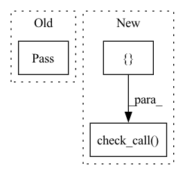

Pattern ID :481

Before Change
def create_installer_linux(_):
pass
////// Windows //////
After Change
// Linux application names are lowercase by convention.
name = settings.get("app_name").lower()
cmd = []
cmd += ["fpm"]
cmd += ["-s", "dir"]
// cmd += ["--log", "error"]
cmd += ["-C", installer_path]
cmd += ["-n", name]
cmd += ["-v", settings.get("version")]
cmd += ["--vendor", settings.get("author")]
cmd += ["-t", "deb"]
cmd += ["-p", dest]
subprocess.check_call(cmd)
////// Windows //////
In pattern: SUPERPATTERN
Frequency: 3
Non-data size: 3
Instances
Fragment ID: 2736217
Project Name: abe404/root_painter
Commit Name: 13db6abf7e007ee35972129317b73bc71c7b66b3
Time: 2022-01-20
Author: rohan.orton@gmail.com
File Name: painter/src/build/installer.py
M Class Name: AnonimousClass
N Class Name: AnonimousClass
M Method Name: create_installer_linux(1)
N Method Name: create_installer_linux(1)
M Parent Class:
N Parent Class:
M File Name: painter/src/build/installer.py
N File Name: painter/src/build/installer.py
M Start Line: 20
M End Line: 20
N Start Line: 20
N End Line: 39
'>
Before Change
master.join()
except (KeyboardInterrupt, SystemExit):
pass
if __name__ == "__main__":
main()
After Change
kill_process("agent", agent)
kill_process("db-logs", db_logs)
if db:
subprocess.check_call(["docker-compose", "down"])
if __name__ == "__main__":
main()
'>
Fragment ID: 2736216
Project Name: determined-ai/determined
Commit Name: f6b8847d9b545d7d975de52b7919fd600bc91a7e
Time: 2020-05-11
Author: yoni@determined.ai
File Name: tools/run-server.py
M Class Name: AnonimousClass
N Class Name: AnonimousClass
M Method Name: main(0)
N Method Name: main(0)
M Parent Class:
N Parent Class:
M File Name: tools/run-server.py
N File Name: tools/run-server.py
M Start Line: 63
M End Line: 81
N Start Line: 83
N End Line: 116
'>
Before Change
def create_installer_windows(_):
pass
////// Mac //////
After Change
target_dir = os.path.abspath("target")
installer_path = os.path.join(target_dir, "installer")
subprocess.check_call(
["makensis", "Installer.nsi"], cwd=installer_path, stdout=subprocess.DEVNULL
)
////// Mac //////
'>
Fragment ID: 2736215
Project Name: abe404/root_painter
Commit Name: 4cbdc2e211a170589356779796d26bbe7f7c5c9e
Time: 2022-01-14
Author: rohan.orton@gmail.com
File Name: painter/src/build/installer.py
M Class Name: AnonimousClass
N Class Name: AnonimousClass
M Method Name: create_installer_windows(1)
N Method Name: create_installer_windows(1)
M Parent Class:
N Parent Class:
M File Name: painter/src/build/installer.py
N File Name: painter/src/build/installer.py
M Start Line: 26
M End Line: 26
N Start Line: 28
N End Line: 32